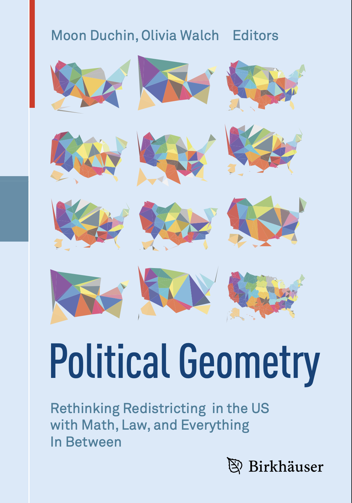
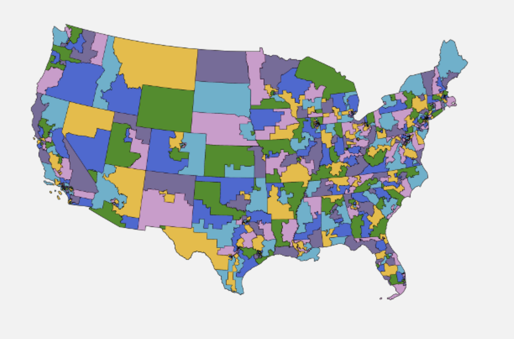
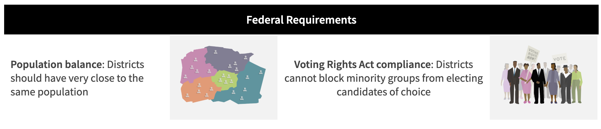
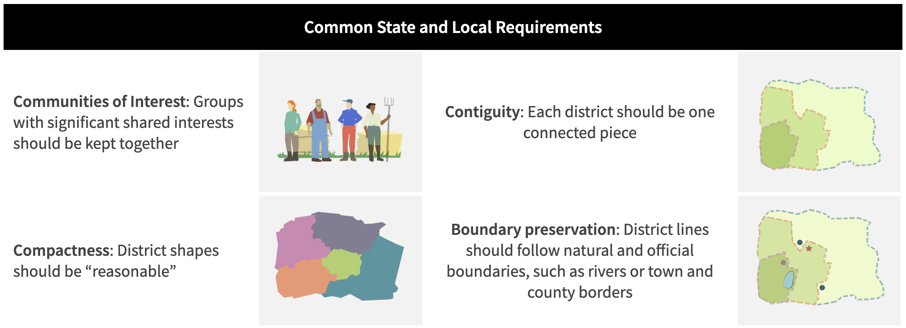
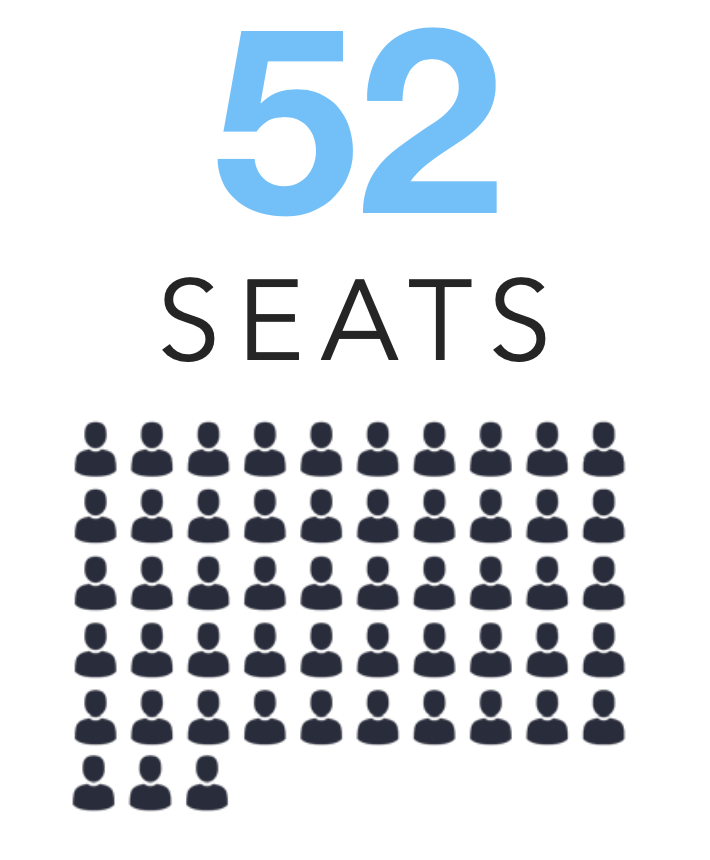
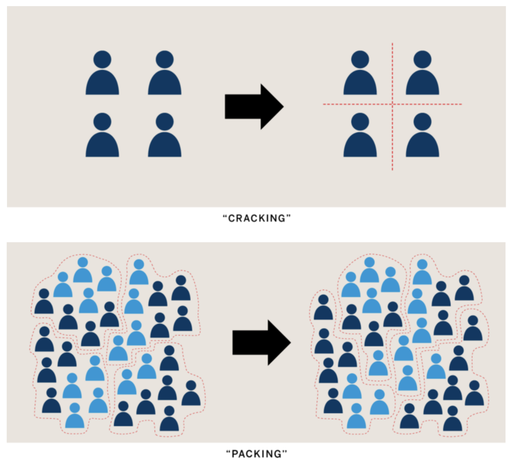
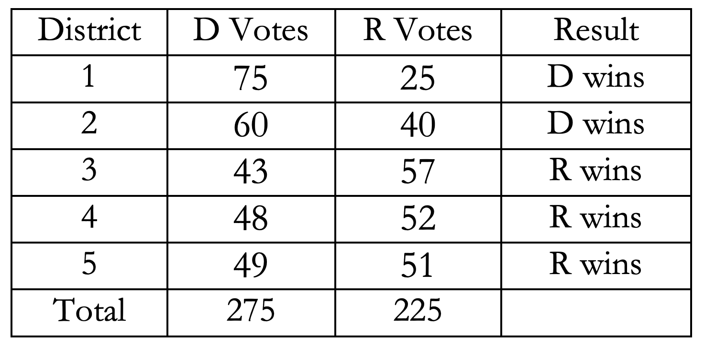
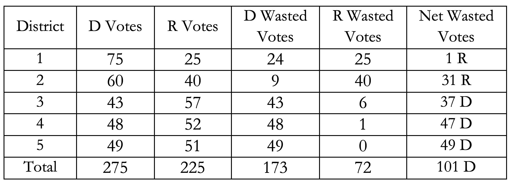
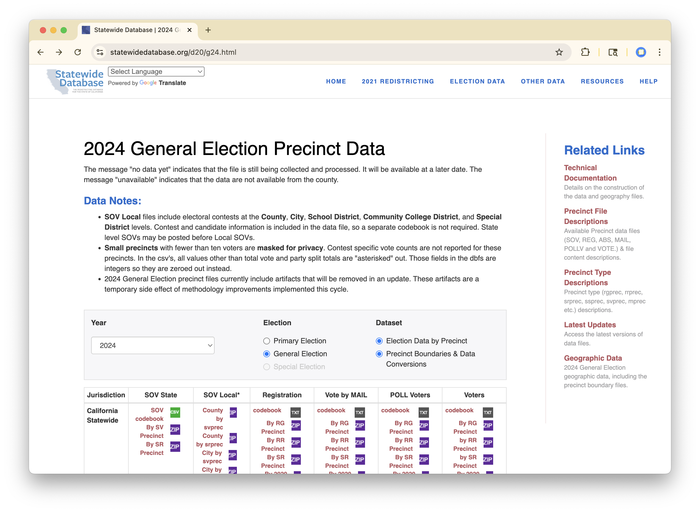

| district | D votes | R votes | Result |
|---|---|---|---|
| 1 | |||
| 2 | |||
| 3 | |||
| 4 | |||
| 5 | |||
| Total | 275 | 225 |
Gerrymandering
When politicians choose their voters
While you’re coming in
I’ve made printouts describing Prop 50 for you to peruse. There are 25 copies in the back corners of the lecture hall: help yourself.
Consider a state with 5 districts, each of which must have 100 voters and will elect a winner from its own Dem and Rep candidates. The total number of votes in the state who will vote for a Dem is 275 and the total for Rep is 225.
How would you spread the voters out to ensure that Dems win as many districts as possible?
02:30
Agenda
- US Elections
- Gerrymandering
- Project

US Elections
Who do we vote for?
Federal
- President
- Representatives
- Senators
State
- Governor and other execs
- State Representatives
- State Senators
- Judges
Local
- Country commissioners
- City councils
- School board members
Policies
- State Propositions
- City Measures
Congressional Districts

- US House of Reps has 435 members allocated to states by population.
- Each decade, a census is conducted to reapportion seats between states.
- State legislatures draw a map to divide state into districts.
- Voters in each distict vote only on their candidates.
Redistricting Rules

Redistricting Rules

Redistricting in CA

In CA, district maps are drawn by an independent commmision.
- 14 members: 5 Dem, 5 Rep, 4 Ind.
- Commissioners
- should be “independent from legislative influence and reasonably representative of the State’s diversity”
- must have voted in 2/3 last elections and be registered (or not) for 5 years.
- cannot be politically employed in past / future
Gerrymandering

Three Quantitative Approaches
- Mean - Median Score (Grofman, 1983)
- Efficiency Gap (Stephanopolous and McGee, 2015)
- Ensembles / Extreme Outliers
1. Mean - Median Score
Suppose we observe an election where the vote share for Republicans in each of \(n\) districts is \(v_1, \ldots, v_N\).
The mean-median score is:
\[ M = \textrm{mean}(v_i) - \textrm{median}(v_i) \]
# A tibble: 5 × 4
district `D votes` `R votes` Result
<int> <dbl> <dbl> <chr>
1 1 75 25 D wins
2 2 60 40 D wins
3 3 43 57 R wins
4 4 48 52 R wins
5 5 49 51 R wins# A tibble: 5 × 5
district `D votes` `R votes` Result v_i
<int> <dbl> <dbl> <chr> <dbl>
1 1 75 25 D wins 0.25
2 2 60 40 D wins 0.4
3 3 43 57 R wins 0.57
4 4 48 52 R wins 0.52
5 5 49 51 R wins 0.51# A tibble: 1 × 2
`mean(v_i)` `median(v_i)`
<dbl> <dbl>
1 0.45 0.51# A tibble: 1 × 3
mean_v med_v `mean_v - med_v`
<dbl> <dbl> <dbl>
1 0.45 0.51 -0.061. Mean - Median Score
Suppose we observe an election where the vote share for Republicans in each of \(n\) districts is \(v_1, \ldots, v_N\).
The mean-median score is:
\[ M = \textrm{mean}(v_i) - \textrm{median}(v_i) \]
LULAC v. Perry (2006): Supreme Court declined standards use a standard of partisan gerrymandering similar to this one.
2. Efficiency Gap
Premise: In partisan gerrymandering, the goal is to force the opposing party to waste as many votes as possible.
Definition: A “wasted” vote doesn’t contribute to the election of a candidate. Two ways:
- Votes cast for the candidate who loses.
- Votes cast for the candidate who wins in excess of the 50% needed.
2. Efficiency Gap
Suppose two parties, A and B. The efficiency gap (EG) favoring party A for a given pattern of votes, is defined as the difference in wasted votes divided by the total number of votes:
\[ EG = \frac{W_B - W_A}{T} \]
Where \(W_B\) is the number of wasted votes by Party B, \(W_A\) is the number of wasted votes by Party A, and \(T\) is the total votes cast.
Gill v. Whitford, 2018: Supreme Court did not issue an opinion; sent back to lower courts.


\[ EG = \frac{173 - 72}{500} = .202 \]
2. Efficiency Gap
Suppose two parties, A and B. The efficiency gap (EG) favoring party A for a given pattern of votes, is defined as the difference in wasted votes divided by the total number of votes:
\[ EG = \frac{W_B - W_A}{T} \]
Where \(W_B\) is the number of wasted votes by Party B, \(W_A\) is the number of wasted votes by Party A, and \(T\) is the total votes cast.
Gill v. Whitford, 2018: Supreme Court did not issue an opinion; sent back to lower courts.
Rucho v. Common Cause (2019)
Federal courts are neither equipped nor authorized to apportion political power as a matter of fairness. It is not even clear what fairness looks like in this context. Deciding among… different visions of fairness poses basic questions that are political, not legal. There are no legal standards discernible in the Constitution for making such judgments. And it is only after determining how to define fairness that one can even begin to answer the determinative question: “How much is too much?”
Partisan gerrymandering is nonjusticiable: “outide the courts competence and therefore beyond the courts’ juristiction”.
3. Ensembles and Extreme Outliers
General idea: Define what fair maps look like and then determine whether a proposed map is extreme in comparison.
- Articulate non-partisan criteria for good maps, e.g. population equality, contiguity, compactness, and minimizing split counties.
- Use a computer (MCMC) to general many random maps that perform well on these criteria (the ensemble).
- Compare the proposed map to the ensembles on measures of partisan advantage.
Words of Wisdom
Moon Duchin, from Political Geometry:
Things I Don’t Believe In
- Presenting any single number as a metric of fairness
- Especially any single number with a prescribed ideal
- Redistricting as optimization
Things I Do Believe In
- Using quantitative information to tell a qualitative story
Project: Gerrymandering
Research Question
Will adoption of a new district map lead to an increase in partisan advantage?
If so, by how much?
Research Question
Will adoption of a new district map lead to an increase in partisan advantage relative to 2024?
If so, by how much?
Data needed to measure partisan advantage
- Election results
- District boundaries
2024 Election Results

References
- Political Geometry, Moon Duchin and Olivia Walch.
- A Citizen’s Guide to Redistricting, the Brennan Center for Justice.
- How the Efficiency Gap Standard Works, the Brennan Center for Justice.